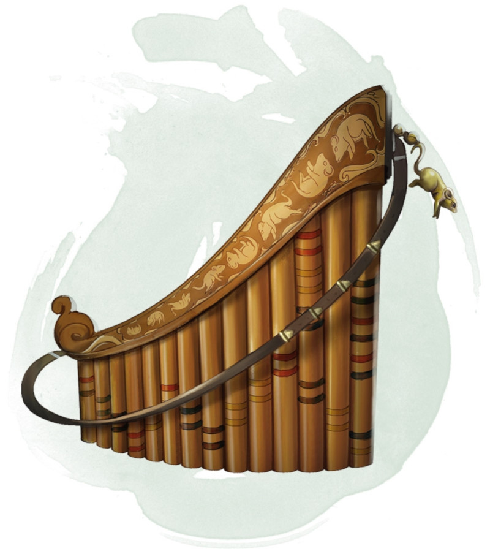

Pipes of the Sewers
[ Flûte des égouts ]
Wondrous item, uncommon (requires attunement)
You must be proficient with wind instruments to use these pipes. While you are attuned to the pipes, ordinary rats and giant rats are indifferent toward you and will not attack you unless you threaten or harm them.
The pipes have 3 charges. If you play the pipes as an action, you can use a bonus action to expend 1 to 3 charges, calling forth one swarm of rats with each expended charge, provided that enough rats are within half a mile of you to be called in this fashion (as determined by the DM). If there aren't enough rats to form a swarm, the charge is wasted. Called swarms move toward the music by the shortest available route but aren't under your control otherwise. The pipes regain 1d3 expended charges daily at dawn.
Whenever a swarm of rats that isn't under another creature's control comes within 30 feet of you while you are playing the pipes, you can make a Charisma check contested by the swarm's Wisdom check. If you lose the contest, the swarm behaves as it normally would and can't be swayed by the pipes' music for the next 24 hours. If you win the contest, the swarm is swayed by the pipes' music and becomes friendly to you and your companions for as long as you continue to play the pipes each round as an action. A friendly swarm obeys your commands. If you issue no commands to a friendly swarm, it defends itself but otherwise takes no actions. If a friendly swarm starts its turn and can't hear the pipes' music, your control over that swarm ends, and the swarm behaves as it normally would and can't be swayed by the pipes' music for the next 24 hours.
The pipes have 3 charges. If you play the pipes as an action, you can use a bonus action to expend 1 to 3 charges, calling forth one swarm of rats with each expended charge, provided that enough rats are within half a mile of you to be called in this fashion (as determined by the DM). If there aren't enough rats to form a swarm, the charge is wasted. Called swarms move toward the music by the shortest available route but aren't under your control otherwise. The pipes regain 1d3 expended charges daily at dawn.
Whenever a swarm of rats that isn't under another creature's control comes within 30 feet of you while you are playing the pipes, you can make a Charisma check contested by the swarm's Wisdom check. If you lose the contest, the swarm behaves as it normally would and can't be swayed by the pipes' music for the next 24 hours. If you win the contest, the swarm is swayed by the pipes' music and becomes friendly to you and your companions for as long as you continue to play the pipes each round as an action. A friendly swarm obeys your commands. If you issue no commands to a friendly swarm, it defends itself but otherwise takes no actions. If a friendly swarm starts its turn and can't hear the pipes' music, your control over that swarm ends, and the swarm behaves as it normally would and can't be swayed by the pipes' music for the next 24 hours.
Dungeon Master´s Guide (SRD)
